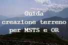

MSTS/OR Terrain Guide 
0.9
1. Software necessario
2. Creare la route
3. Modellare il terreno
4. Modellare le montagne distanti
5. Completare le montagne distanti
6. Dove prelevare le DEM
7. Bibliografia
8. Ringraziamenti
9. Download sorgenti e binari
10. Note legali
MSTS/OR Terrain Guide
Docs
»
Guida alla creazione del terreno per MSTS e OR
View page source
Guida alla creazione del terreno per MSTS e OR
¶
1. Software necessario
1.1. Microsoft Train Simulator
1.2. Demex
2. Creare la route
2.1. Parametri generali
2.2. Definire l’area
3. Modellare il terreno
3.1. Caricare le DEM
3.2. Generare le montagne
4. Modellare le montagne distanti
5. Completare le montagne distanti
5.1. Generare il quad-tree nella route temporanea
5.2. Modellare il terreno con Demex
5.3. Trasferire i tiles
6. Dove prelevare le DEM
6.1. NASA
6.2. viewfinderpanoramas
6.3. Portale cartografico nazionale
7. Bibliografia
8. Ringraziamenti
9. Download sorgenti e binari
9.1. Versioni compilate
9.2. Sorgenti
10. Note legali
10.1. Garanzia
10.2. Riconoscimenti della proprietà
10.3. Accordi di Copyright e Licenza